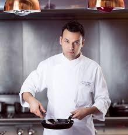
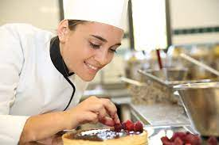

Bistro`s Chefs

Chef Marius
The man behind the all magic !

SouChef Emilia
The Sugar Master

Chef Hasan
The steak Master
SouChef Iza
Master of Sea Fruits
The man behind the all magic !
The Sugar Master
The steak Master
Master of Sea Fruits